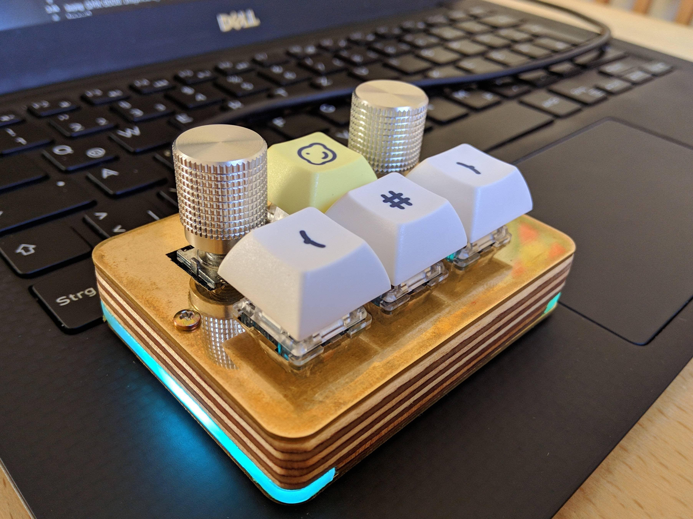
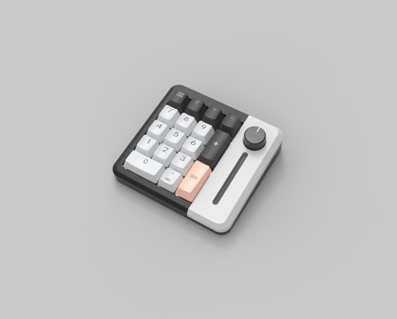
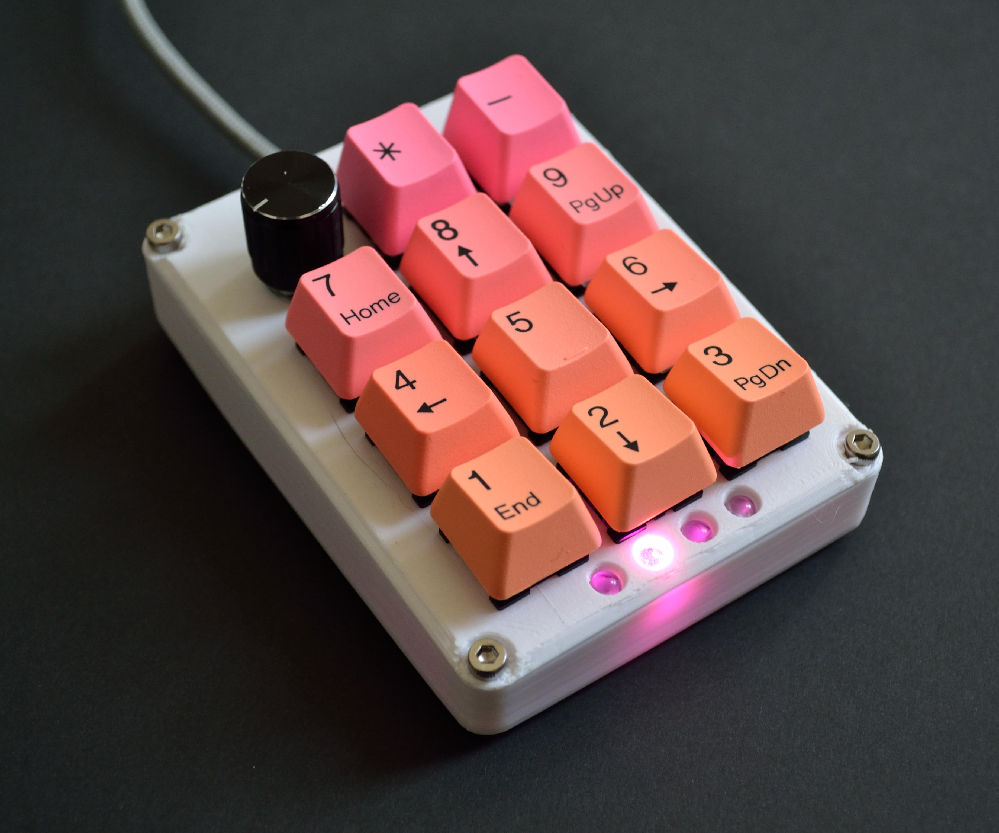
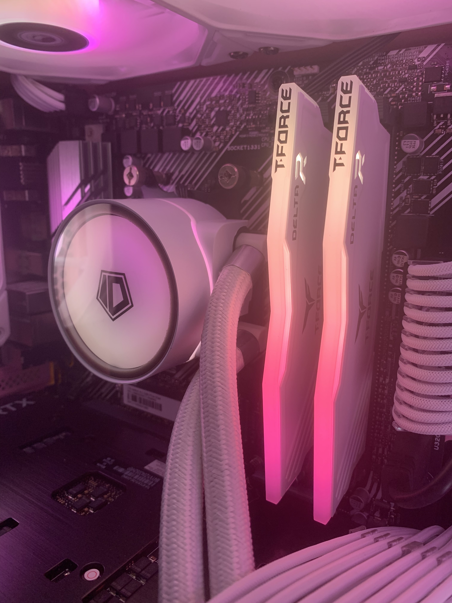

Final Project
Final Project 

This page is documentation of me applying what I have learnt in this module to make my very own first project through
the use of CAD to design, 3D printing and Laser cutting to fabricate, and Arduino to program. The final project I have decided on
is a Mechanical keypad as I am familiar with keyboards and understand the theory in making one, however I have not made one by myself before.
Thus, I will be attempting to make a smaller version of a keyboard to see whether I could apply my knowledge.
Project Title: Mechanical Keypad
It is a smaller keyboard that allows easier access to keys and shortcuts that are hard to reach.
-Keys (Function keys F1-F12)
-Shortcuts (Ctrl + C, Ctrl + P)
Assignable keys and rotary encoder
It will have a LED base to aid in its design.
It will also have a LED bar at the side to show when which button is pressed as I find that having a screen for that is unnecessary.
It will have 2 rotary encoders to control volume and zoom in and out.
Here are some reference pictures I used to better understand what I envision the final product would look like.


Colour palette reference

| CaD Design, Graphics | Case and Switch Plate |
| Laser Cutting | Case design |
| 3D Printing | Keycaps |
| Micro-controller | Read keypresses from keypad and send output to computer to press those keys, Control LEDS |
| Input Devices | Mechanical Switches |
| Output Devices | LED |
| Sn. | Qty | Item Description | Approx Cost |
| 1. | 1 | Arduino Pro Micro | $8 | 2. | 2 | Rotary Encoder | $2 |
| 3. | 4 | Gateron Milky Yellow | $1.20 |
| 4. | At least 17cm | NeoPixels | FabLab/$9.50 |
| 5. | 1 | White Acyrlic Sheet | FabLab |
| 6. | 1 | Clear/Translucent Acrylic | FabLab |
| 7. | 2 | Silver Encoder Knobs without standards | $4.20 |
| Total: $25.70 |
Arduino Pro Micro (Shopee)
Rotary Encoder (Shopee)
Gateron Milky Yellow Switches (Shopee)
NeoPixels (Shopee)
Silver Encoder Knob (Shopee)
Rotary Encoder (Shopee)
Gateron Milky Yellow Switches (Shopee)
NeoPixels (Shopee)
Silver Encoder Knob (Shopee)